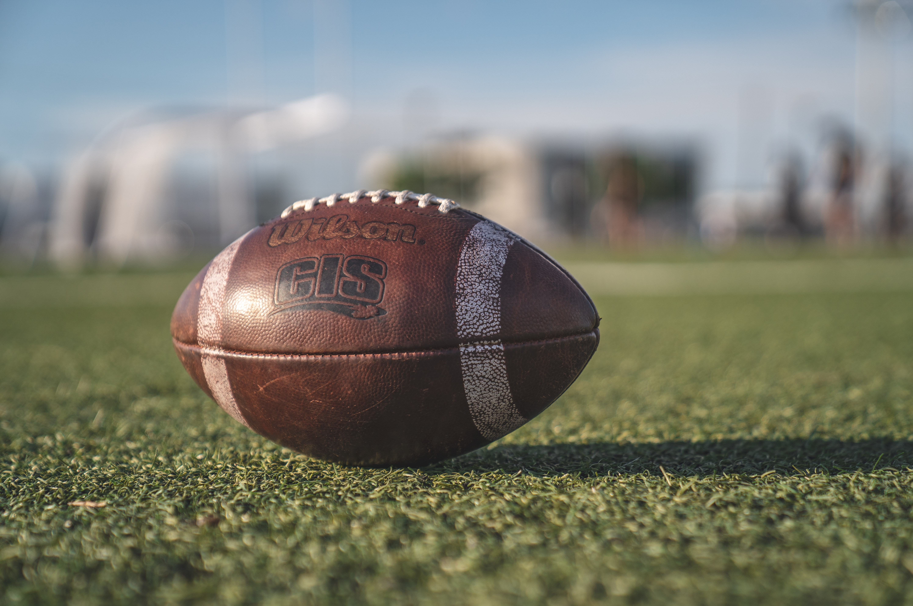
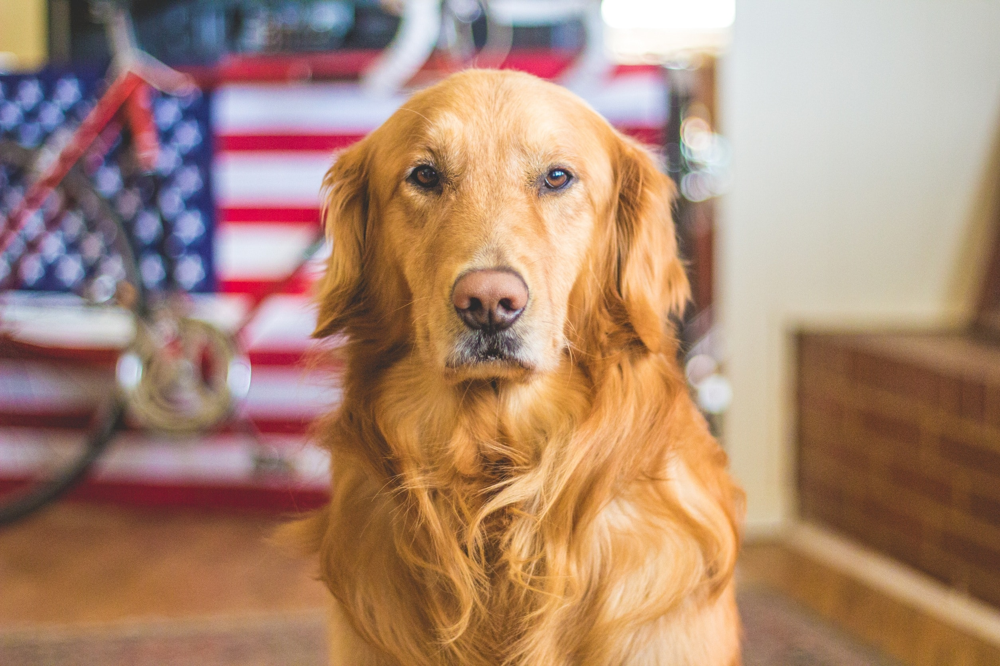

Hello, my name is
Christian Iredia
I am a Software Developer
“Software development is both challenging and rewarding. It’s creative like an art-form, but (unlike art) it provides concrete,measurable value.”
-Chad Fowler
Get To Know Me:
Favorite Hobbies

Growing up I was always very much into tech, something about it always gravitated me towards it. I did not know anything about development, I had a friend that mentioned it to me and showed me some code that he had created, and Instantly fell in love!
Favorite Season

Cold! I love the winter time! Love being able to bring the jacket out and the long sleeve shirts! Living in Houston, it is ALWAYS hot! I rarely get to enjoy the simple pleasures of snow, Makes you cherish the colder days even more.
Favorite Sport
Football! Easy Answer! I love football. Love the competition, Love the team aspects. Growing up I wanted to play sports, I was very fast, football was the first sport that caught my eye, so it has always been a love of mine since.
Favorite Animal
Hard not to love this dog, the Golden Retriever. Such a beauty to look at, and there are sweet dogs too! Growing up my favorite movie was "Buddy!". So If you know a thing or two about that movie, you can easily see why it's my favorite dog!
Favorite Game

Remember my favorite sport? If so this should be an easy one... Madden! My favorite video game, I have been playing madden since I was a litle kid. Year after Year, through the ups and downs of winning and losing, Madden will always be my favorite game ever.
Favorite Foods

Pasta! Yummy Yummy! Just thinking about it right now is making my stomach growl for it! I love Pasta all types, I am not a picky eater. If you ask me what I am craving at the moment 9 times out of 10 my answer will always be Pasta!